Tjenestepensjon er en sentral del av norsk arbeidsliv og bedriftenes personalkostnader. Det er en pensjon som arbeidsgivere tilbyr sine ansatte som en del av lønnsvilkårene, og som er både lovpålagt og et viktig rekrutteringsverktøy. For bedrifter representerer tjenestepensjon en betydelig kostnad som må håndteres korrekt i regnskapet og som påvirker personalkostnadene og den totale kostnadsstrukturen.
Ny ordning med Egen pensjonskonto gir ansatte mulighet til å samle pensjonskapital fra flere arbeidsgivere på én konto.
Ved avslutning av en ytelsesbasert pensjonsordning kan ansatte også motta et pensjonskapitalbevis som representerer verdien av oppsparte pensjonsmidler. Les mer i Pensjonskapitalbevis.
Seksjon 1: Grunnleggende om Tjenestepensjon
Tjenestepensjon er en kollektiv pensjon som arbeidsgivere etablerer for sine ansatte. Den kommer i tillegg til folketrygden og skal sikre at ansatte opprettholder en rimelig levestandard etter pensjonering. For bedrifter er dette både en juridisk forpliktelse og en viktig del av den totale kompensasjonspakken til ansatte.
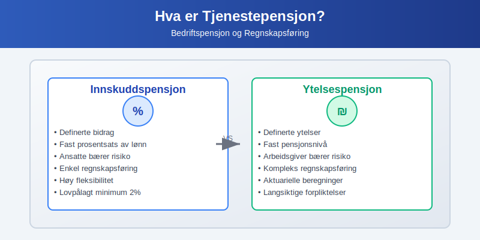
1.1 Lovpålagt Tjenestepensjon (LTP)
Lov om obligatorisk tjenestepensjon fra 2006 pålegger alle arbeidsgivere å ha tjenestepensjon:
- Virkeområde: Gjelder alle arbeidsgivere med ansatte
- Unntak: Kun for ansatte med mindre enn 20% stilling og inntekt under 1G (grunnbeløpet)
- Minimumskrav: Minst 2% av lønn mellom 1G og 12G (se Hva er obligatorisk tjenestepensjon? for full oversikt)
- Opptjeningstid: Minimum 3 års opptjening
- Ansiennitet: Pensjonsnivå påvirkes av ansiennitet og tjenestetid
Regnskapsmessige konsekvenser:
- Pensjonskostnaden påvirker personalkostnadene
- Påvirker arbeidskapitalen gjennom løpende innbetalinger
- Kan skape utsatte skatteposter ved forskjeller mellom regnskaps- og skattemessig behandling
1.2 Typer Tjenestepensjon
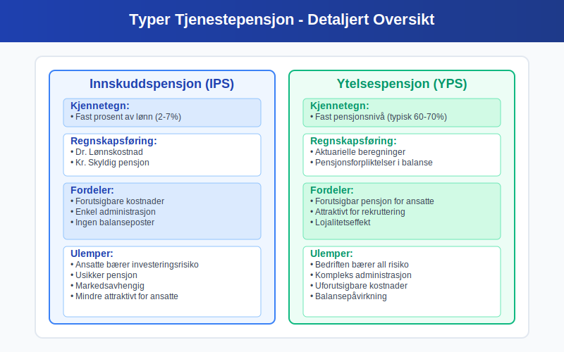
Innskuddspensjon:
- Definerte bidrag: Fast prosentsats av lønn
- Risiko: Ansatte bærer investeringsrisiko
- Regnskapsføring: Enklere, kostnaden bokføres løpende
- Fleksibilitet: Høy, kan tilpasses bedriftens økonomi
Ytelsespensjon:
- Definerte ytelser: Fast pensjonsnivå ved pensjonering
- Risiko: Arbeidsgiver bærer investeringsrisiko
- Regnskapsføring: Kompleks, krever aktuarielle beregninger
- Forpliktelser: Skaper langsiktige forpliktelser i balansen
1.3 Offentlig tjenestepensjon
For ordninger i offentlig sektor finnes egne regler og ytelsesgarantier. Les mer i Offentlig tjenestepensjon.
Seksjon 2: Regnskapsføring av Tjenestepensjon
2.1 Innskuddspensjon - Regnskapsbehandling
For innskuddspensjon er regnskapsføringen relativt enkel siden bedriften kun har forpliktelse til å betale de avtalte bidragene:
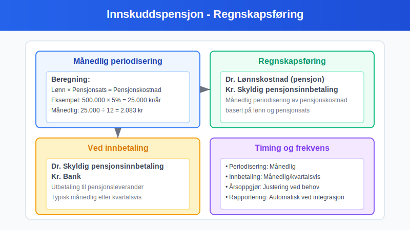
Løpende regnskapsføring:
Dr. Lønnskostnad (pensjon) XXX
Kr. Skyldig pensjonsinnbetaling XXX
Ved innbetaling:
Dr. Skyldig pensjonsinnbetaling XXX
Kr. Bank XXX
Periodisering: Pensjonskostnaden periodiseres månedlig basert på lønnsutbetalinger og avtalt pensjonsats.
2.2 Ytelsespensjon - Kompleks Regnskapsføring
Ytelsespensjon krever mer kompleks regnskapsbehandling i henhold til NRS 6 - Pensjonskostnader:
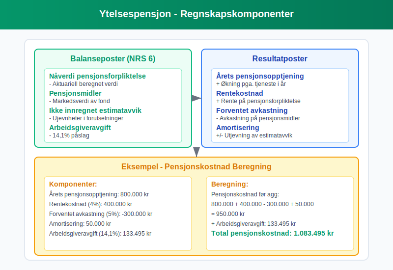
Hovedkomponenter:
- Nåverdi av pensjonsforpliktelser - beregnes aktuarielt
- Pensjonsmidler - markedsverdi av pensjonsfond
- Ikke innregnet tap/gevinst - ujevnheter i estimater
- Arbeidsgiveravgift - påslag på pensjonsforpliktelser
Beregning av pensjonskostnad:
| Komponent | Forklaring | Regnskapsmessig effekt |
|---|---|---|
| Årets pensjonsopptjening | Økning i forpliktelse pga. tjeneste | Øker pensjonskostnad |
| Rentekostnad | Rente på pensjonsforpliktelse | Øker pensjonskostnad |
| Avkastning på pensjonsmidler | Forventet avkastning | Reduserer pensjonskostnad |
| Amortisering | Utjevning av estimatavvik | Kan øke/redusere kostnad |
2.3 Skattemessige Forhold
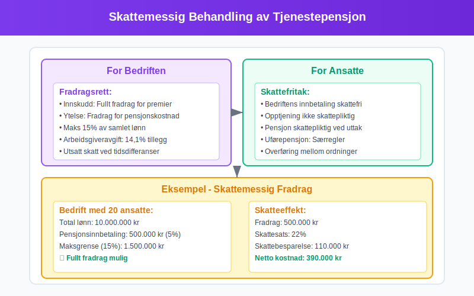
Fradragsrett for bedrifter:
- Innskuddspensjon: Fullt fradrag for innbetalte premier
- Ytelsespensjon: Fradrag basert på regnskapsmessig pensjonskostnad
- Begrensninger: Maksimalt 15% av samlet lønn til alle ansatte
Skattemessige justeringer:
- Forskjeller mellom regnskaps- og skattemessig kostnad skaper utsatt skatt
- Må avstemmes i skattemeldingen
Seksjon 3: Økonomiske Aspekter og Planlegging
3.1 Kostnadsanalyse og Budsjetting
Tjenestepensjon utgjør en betydelig del av bedriftens totale personalkostnader og må planlegges nøye:
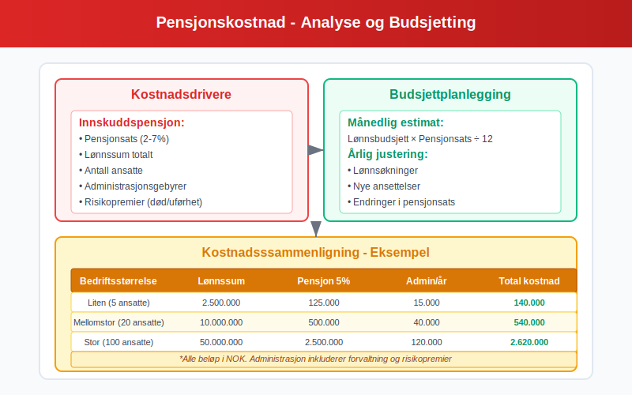
Kostnadsfaktorer innskuddspensjon:
- Pensjonsats: Typisk 2-7% av lønn
- Lønnsnivå: Påvirker absolutte kostnader
- Antall ansatte: Skalaeffekt på administrasjon
- Alderssammensetning: Påvirker risikopremier
Kostnadsfaktorer ytelsespensjon:
- Demografiske antagelser: Levealder, turnover
- Økonomiske antagelser: Rente, lønnsutvikling, inflasjon
- Aktuarielle gevinster/tap: Kan skape store svingninger
3.2 Finansiell Planlegging og Likviditetseffekt
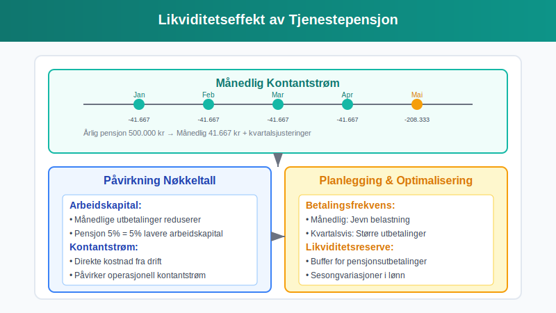
Likviditetsplanlegging:
- Månedsvis utbetaling: Påvirker kontantstrømmen løpende
- Årlige justeringer: Endringer i pensjonsavtaler
- Forsikringspremier: Separate kostnader for risikodekninger
Effekt på nøkkeltall:
| Nøkkeltall | Påvirkning | Forklaring |
|---|---|---|
| Lønnsomhet | Negativ | Øker personalkostnader |
| Arbeidskapital | Negativ | Månedlige utbetalinger |
| Soliditet | Negativ (ytelse) | Pensjonsforpliktelser i balansen |
3.3 Strategiske Vurderinger
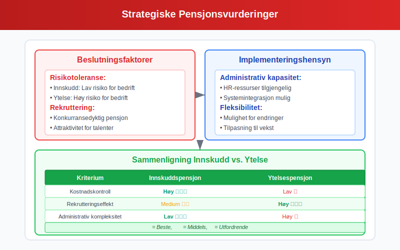
Valg av pensjonsordning:
- Risikotoleranse: Innskudd vs. ytelse
- Administrativ kapasitet: Kompleksitet i håndtering
- Konkurranseforhold: Rekrutterings- og retensjonshensyn
- Finansiell fleksibilitet: Mulighet for justeringer
Leverandørvalg:
- Forsikringsselskaper: Tradisjonelle leverandører
- Pensjonskasser: Bransjebaserte løsninger
- Forvaltningsselskaper: Kun fondsforvaltning
- Kostnadseffektivitet: Administrasjonsgebyrer og forvaltningskostnader
Seksjon 4: Juridiske Krav og Compliance
4.1 Lovkrav og Forskrifter
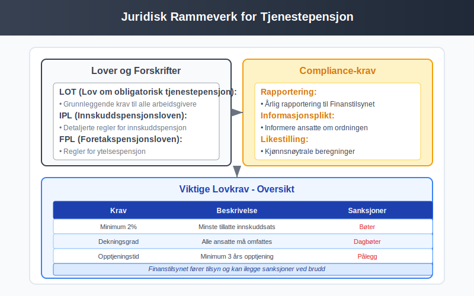
Sentrale lover og forskrifter:
- Lov om obligatorisk tjenestepensjon (LOT): Grunnleggende krav
- Innskuddspensjonsloven (IPL): Detaljerte regler for innskuddspensjon
- Foretakspensjonsloven (FPL): Regler for ytelsespensjon
- Finanstilsynets forskrifter: Tekniske krav og rapportering
Compliance-krav:
- Årlig rapportering: Til Finanstilsynet
- Informasjonsplikt: Overfor ansatte
- Likestilling: Kjønnsnøytrale ordninger
- Portabilitet: Rett til å ta med opptjente rettigheter
4.2 Arbeidsrettslige Aspekter
Tariffavtaler og pensjon:
- Bransjestandarder: Ulike satser etter bransje
- Forhandlingsrett: Fagforeningers rolle
- Overgang mellom ordninger: Prosedyrer ved skifte
- Konflikthåndtering: Ved uenighet om pensjonsvilkår
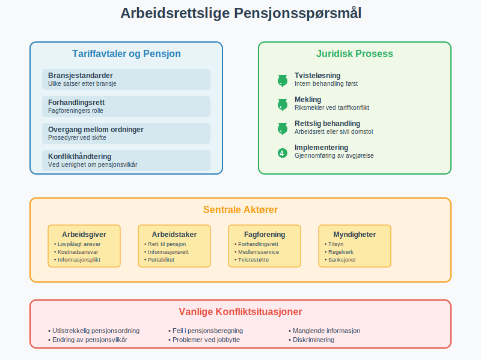
Seksjon 5: Digitale Løsninger og Automatisering
5.1 Moderne Pensjonsadministrasjon
Digitalisering har revolusjonert pensjonsadministrasjonen:
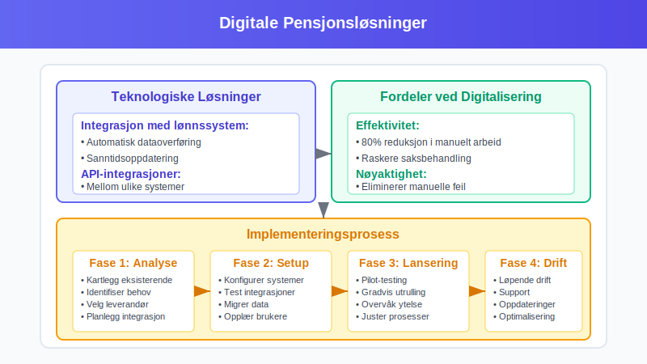
Teknologiske løsninger:
- Integrasjon med lønnssystem: Automatisk dataoverføring
- Selvbetjeningsportaler: For ansatte
- Rapporteringsverktøy: Automatisk compliance
- API-integrasjoner: Mellom ulike systemer
Fordeler ved digitalisering:
- Effektivitet: Redusert manuelt arbeid
- Nøyaktighet: Mindre feil i beregninger
- Transparens: Bedre oversikt for ansatte
- Compliance: Automatisk overholdelse av krav
5.2 Fremtidige Trender
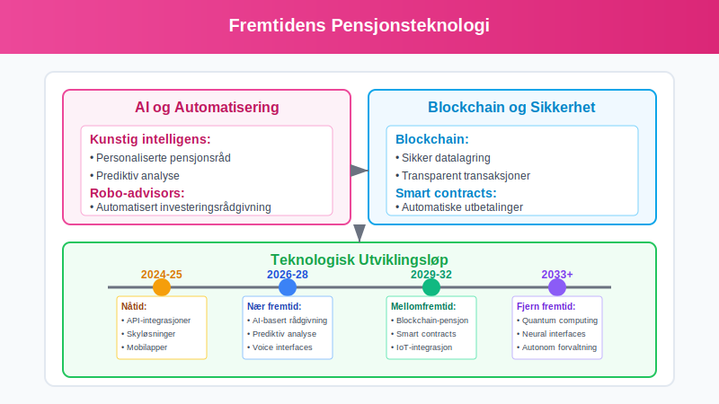
Teknologiske utviklingstrekk:
- Kunstig intelligens: Personaliserte pensjonsråd
- Blockchain: Sikker datalagring og -overføring
- Robo-advisors: Automatisert investeringsrådgivning
- Big data: Bedre risikoprediksjoner
Regulatoriske endringer:
- EU-direktiver: Påvirker norske regler
- Bærekraftskrav: ESG-integrasjon i pensjon
- Økt fleksibilitet: Tilpassede pensjonsløsninger
Seksjon 6: Internasjonale Perspektiver
6.1 Sammenligning med Andre Land
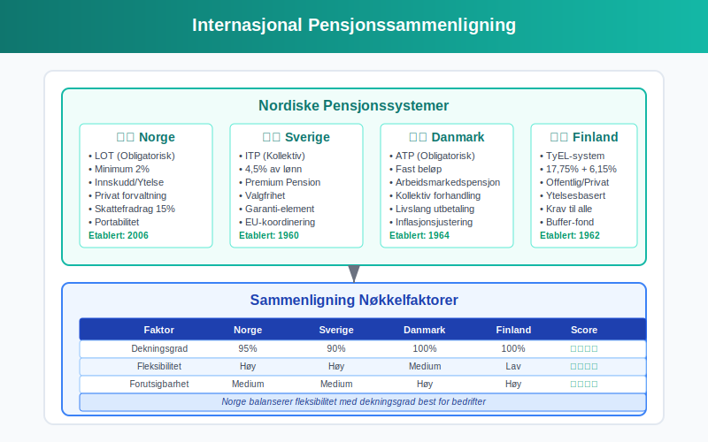
Nordiske land:
- Sverige: Premium Pension-systemet
- Danmark: Arbeidsmarkedspensjon (ATP)
- Finland: TyEL-systemet
Implikasjoner for norske bedrifter:
- Utenlandske ansatte: Koordinering av pensjonsrettigheter
- Internasjonal mobilitet: Portabilitet av pensjon
- Konkurranseforhold: Sammenligning av totale lønnskostnader
6.2 Multinasjonale Selskaper
Utfordringer for globale bedrifter:
- Harmonisering: Felles pensjonsstandarder på tvers av land
- Rapportering: Konsolidert regnskapsføring
- Compliance: Ulike juridiske krav per land
- Kostnadsoptimalisering: Effektiv ressursbruk
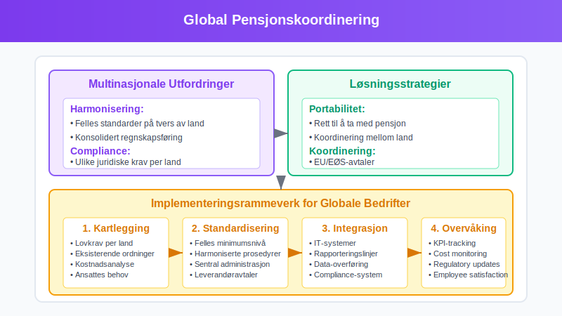
Seksjon 7: Beste Praksis og Anbefalinger
7.1 Implementering av Pensjonsordning
Strukturert tilnærming til etablering:
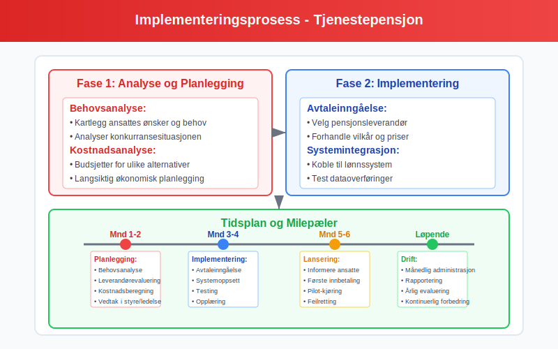
Fase 1: Analyse og planlegging
- Behovsanalyse: Kartlegging av ansattes behov
- Kostnadsanalyse: Budsjettering av pensjonskostnader
- Leverandørevaluering: Sammenligning av tilbud
- Juridisk gjennomgang: Sikre compliance
Fase 2: Implementering
- Avtaleinngåelse: Med valgt leverandør
- Systemintegrasjon: Kobling til eksisterende systemer
- Opplæring: Av HR og økonomipersonell
- Informasjon: Til ansatte om ny ordning
Fase 3: Drift og oppfølging
- Løpende administrasjon: Månedlig håndtering
- Rapportering: Til myndigheter og ledelse
- Evaluering: Årlig gjennomgang av ordning
- Optimalisering: Kontinuerlig forbedring
7.2 Nøkkeltall og Overvåking
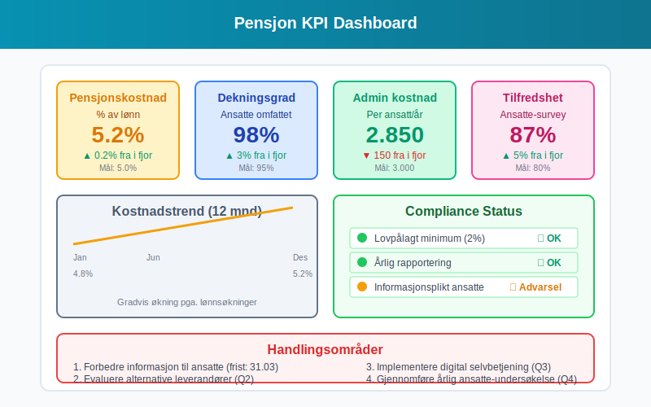
Viktige nøkkeltall for oppfølging:
| KPI | Målområde | Frekvens |
|---|---|---|
| Pensjonskostnad % av lønn | 2-7% | Månedlig |
| Dekningsgrad ansatte | >95% | Kvartalsvis |
| Administrasjonskostnad per ansatt | Optimalisering | Årlig |
| Ansattes tilfredshet | >80% | Årlig |
Rapporteringsrutiner:
- Månedlig: Kostnader og innbetalinger
- Kvartalsvis: Analyse av avvik og trender
- Årlig: Omfattende evaluering og strategisk gjennomgang
7.3 Risikostyring
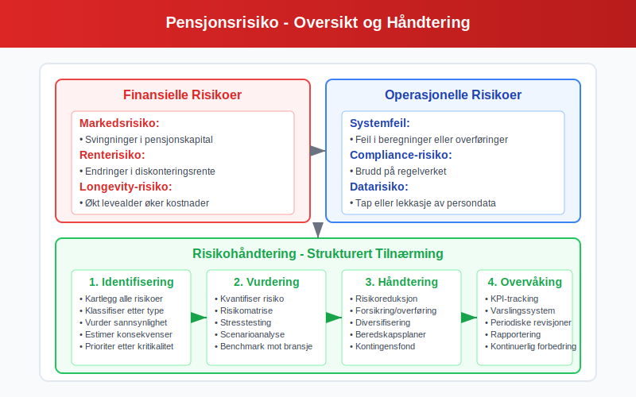
Identifisering av hovedrisikoer:
Finansielle risikoer:
- Markedsrisiko: Svingninger i pensjonskapital
- Renterisiko: Endringer i diskonteringsrente
- Inflasjonssrisiko: Påvirker fremtidige forpliktelser
- Longevity-risiko: Økt levealder påvirker kostnader
Operasjonelle risikoer:
- Systemfeil: Feil i beregninger eller overføringer
- Compliance-risiko: Brudd på regelverket
- Leverandørrisiko: Problemer hos pensjonsleverandør
- Datarisiko: Tap eller lekkasje av persondata
Risikohåndtering:
- Diversifisering: Spredning av investeringsrisiko
- Forsikring: Dekking av operasjonelle risikoer
- Overvåking: Kontinuerlig oppfølging av nøkkeltall
- Beredskapsplaner: For håndtering av kritiske situasjoner
Konklusjon
Tjenestepensjon er en kompleks, men viktig del av bedriftens økonomi og personaladministrasjon. Den påvirker alt fra regnskapsføring og kostnadsstruktur til likviditet og konkurranseevne.
Nøkkelområder for suksess:
- Juridisk compliance: Overhold alle lovkrav
- Kostnadseffektivitet: Optimaliser kostnader vs. ytelser
- Teknologiutnyttelse: Bruk digitale løsninger for effektivitet
- Strategisk tilnærming: Integrer pensjon i total personalstrategi
For bedrifter er det avgjørende å ha god kontroll på både de regnskapsmessige og operasjonelle aspektene ved tjenestepensjon. Dette krever kompetanse innen regnskap, jus og personaladministrasjon, samt gode systemer for overvåking og rapportering.
Med riktig tilnærming kan tjenestepensjon bli et verdifullt verktøy for både å tiltrekke og beholde kompetente ansatte, samtidig som bedriften opprettholder god økonomisk kontroll og overholder alle juridiske krav.